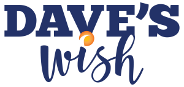

Bridging the Gap With Hope Honoring the life and vision of David Wayne Schuchard
Because no family facing a terminal diagnosis should have to choose between comfort and keeping the lights on.
David Wayne Schuchard (1956 - 2011)
David with Bill Sutter and Bill Waller
A Friend's Promise, A Community's Mission
In 2011, David Wayne Schuchard lost his battle with pancreatic cancer. David was the kind of person who noticed when someone else was struggling. He was the first to lend a hand, the first to ask what was needed, the first to show up.
To make life a little easier for those navigating its most challenging moments.
After David's passing, three of his closest friends came together with a shared resolve. They would honor David's spirit by building something lasting. Dave's Wish became Bridge Hospice's nonprofit arm, dedicated to filling the gaps that insurance and government programs leave behind.
Today, Dave's Wish provides direct financial assistance to hospice patients and their families right here in Lubbock County. From groceries to utility bills, rent to transportation, the program steps in when families need it most.
What Dave's Wish Provides
Direct, practical support for hospice patients and families facing financial hardship. No bureaucracy, no wait lists, just help when it matters most.
Groceries & Food
Nutritious meals so families can focus on time together.
Rent & Housing
Emergency payments to keep families in their homes.
Heating & Utilities
Keeping the lights on and the heat running.
Clothing & Comfort Items
Personal items that bring dignity during difficult days.
Transportation
Rides to appointments and essential errands.
Household Maintenance
Small repairs and home upkeep for safe living.
100% of every dollar donated goes directly to patients.
Administrative costs are covered by Bridge Hospice, not your donation.Every Dollar Stays Local
Dave's Wish operates with a simple promise: your generosity reaches patients directly, without detours.
Support Dave's Wish
Every gift, no matter the size, provides immediate, tangible help to a hospice patient or family in need.
Direct Donation
Make a one-time or recurring contribution. Your gift funds groceries, rent, utilities, and other essentials for hospice patients in Lubbock County.
Donate NowGift Donation
Give a meaningful gift in someone's name. We'll send a personalized acknowledgment letting them know a donation was made in their honor.
Give a GiftMemorial Donation
Honor the memory of a loved one with a contribution to Dave's Wish. A fitting tribute that carries their spirit of compassion forward.
Make a TributeContinue Dave's Legacy
David believed that no one should face their hardest days alone. Every contribution, every act of generosity, keeps that belief alive for another family in Lubbock.